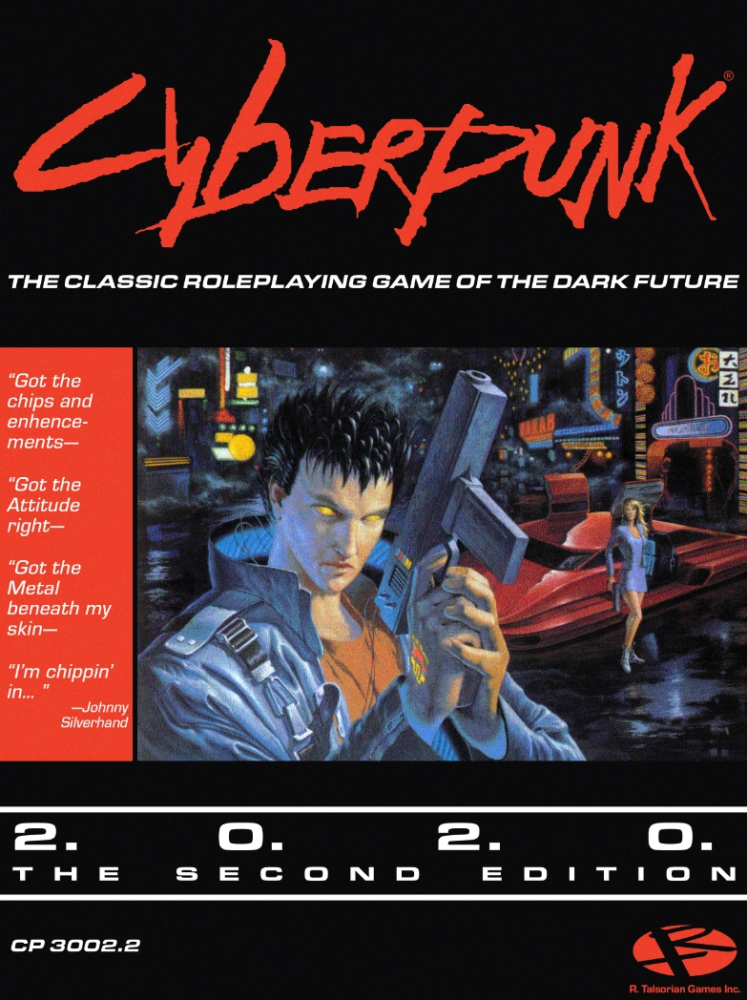

TRPG Review

Cyberpunk 2020
Cyberpunk 2020 is a tabletop role-playing game (RPG) that was first published in 1990 by R. Talsorian Games.
It is set in a dark, dystopian future where the world is dominated by powerful corporations, advanced
technology, and social decay.
At its core, Cyberpunk 2020 is a game about survival and rebellion. Players take on the roles of characters
in this gritty world, each with their own unique skills, abilities, and cybernetic enhancements. The game is
focused on exploration, combat, and intrigue, and players must navigate the dangerous streets and alleys of
Night City to survive.
The game uses a skill-based system to determine the success or failure of actions, with characters rolling a
10-sided die to determine the outcome. Combat is fast-paced and lethal, with players relying on their wits
and tactics to outmaneuver their opponents.
One of the unique features of Cyberpunk 2020 is the inclusion of cybernetic enhancements, which allow
characters to augment their bodies with various technological upgrades. These enhancements can range from
simple improvements to vision or hearing to more advanced modifications, such as enhanced reflexes or even
cybernetic limbs.
Cyberpunk 2020 has a rich and detailed world, with a complex political and economic landscape that players
must navigate. The game's setting is heavily influenced by classic cyberpunk works such as Blade Runner and
Neuromancer, and it features a unique mix of technology, social issues, and cultural references.
Overall, Cyberpunk 2020 is a fantastic game for anyone who enjoys gritty, dystopian worlds and complex
political intrigue. It offers a unique mix of strategy, combat, and exploration, and the inclusion of
cybernetic enhancements adds an extra layer of customization and depth to the game. If you're interested in
getting started with Cyberpunk 2020, there are many resources available online, including the official
Cyberpunk 2020 website and various fan-made guides and communities.
Did you enjoy my review of this TRPG? Check out one of my favorite TRPG reviews below or see a
list of TRPG reviews!
More importantly, I'm always looking for new games to enjoy. Let
me know what you're currently playing!
Other TRPGs
Check out another TRPG review!